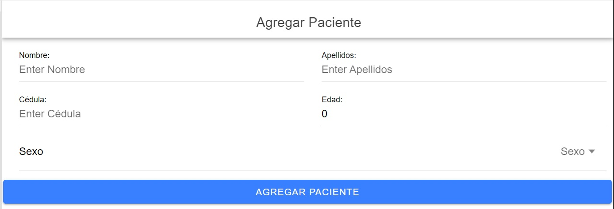
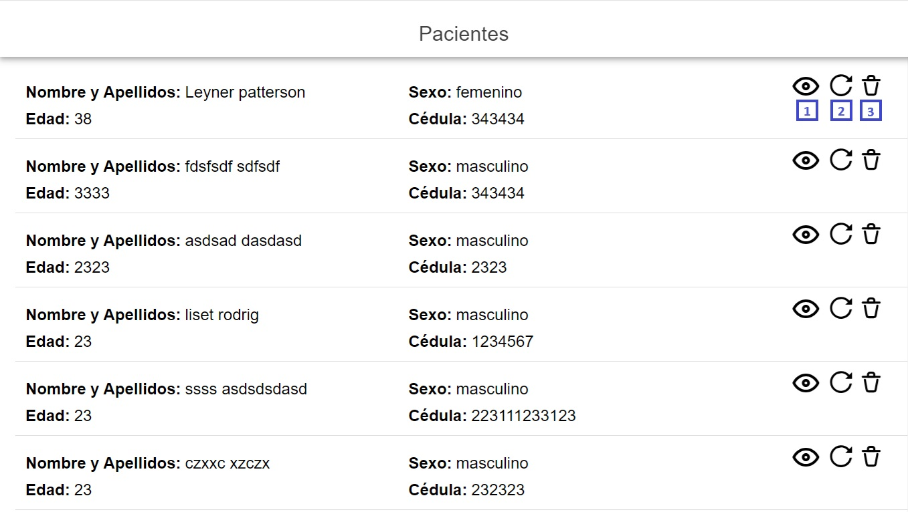
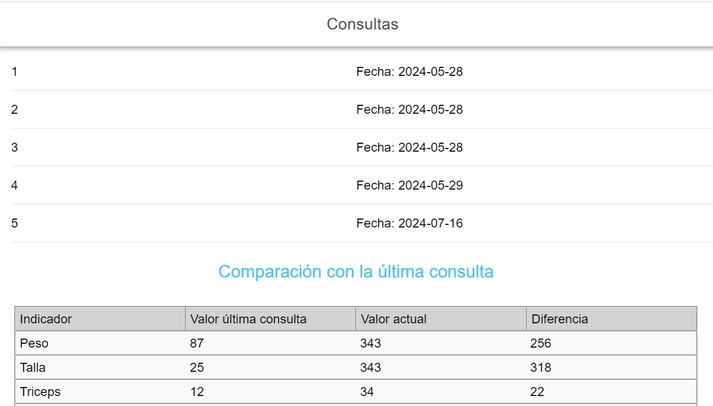
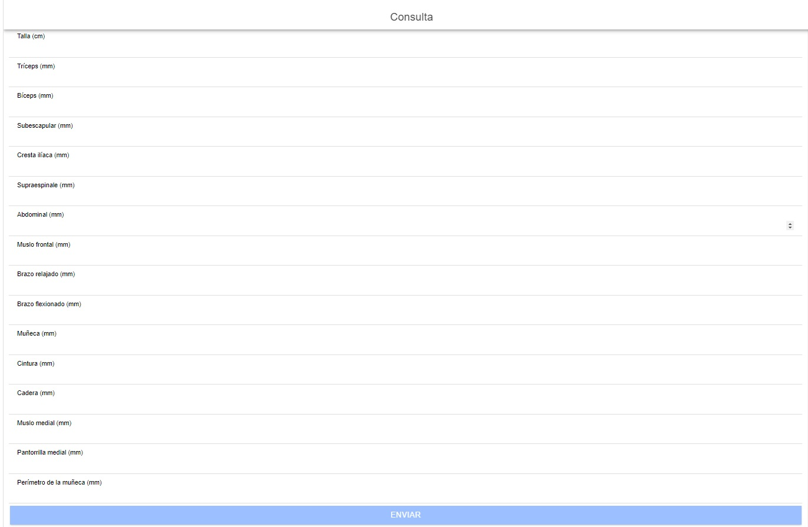

Bienvenido a la Aplicación de Seguimiento de Desnutrición
Nuestra aplicación está diseñada para ayudarte a realizar un seguimiento preciso y eficiente del estado nutricional de los pacientes.
Proporcionamos herramientas y funcionalidades que te permiten registrar y analizar datos relacionados con la desnutrición, así como
generar informes y visualizaciones para facilitar la toma de decisiones en el tratamiento y seguimiento de los pacientes.
Ayuda del sistema

Adicionar Pacientes
Esta interfaz nos permite adicionar una paciente nuevo al sistema, especificando los datos solicitados.

Listar Pacientes
Esta interfaz nos muestra el listado de pacientes, donde se accede a tres opciones fundamentales
[1]-Visualizar las consultas [2]-Actualizar datos del paciente [3]-Eliminar el paciente seleccionado.

Listar Consultas
En la interfaz se muestra el listado de consultas asociadas a un paciente, desde la primera a la más actual. En la parte inferior
se muestra una tabla comparativa de los indicadores, comparados entre las dos últimas consulta.

Adicionar Consultas
En la interfaz se muestra un formulario para el registro de los indicadores de la consulta asociada a un paciente, es importante destacar que
cuando se insertan los datos del paciente si el mismo no existe se crea automáticamente en la base de datos.